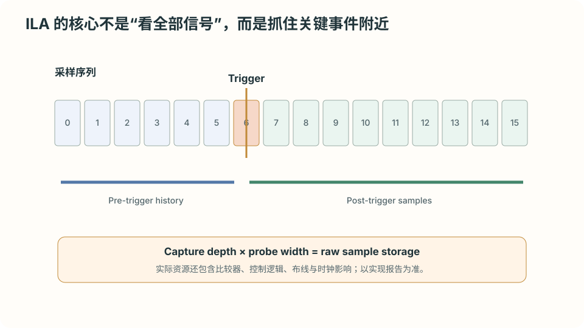
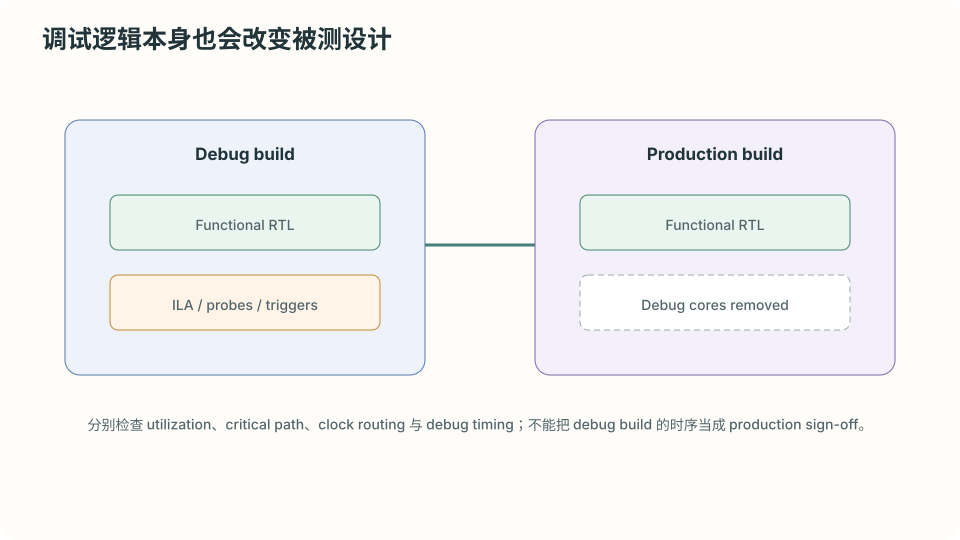

FPGA 硬件调试：从可观测性到 ILA / SignalTap 触发捕获
建立从 LED/GPIO、事件计数器、UART trace 到 ILA、SignalTap、VIO 和 JTAG-to-AXI 的层次化调试方法，并验证调试逻辑本身对实现的影响。
01 / FPGA 调试的第一步：让内部状态可观察
仿真通过不等于板级运行正确。FPGA 上的故障可能来自时钟、复位、管脚、电源、CDC、总线协议、外设时序或软件配置。调试的目标不是一次性把所有内部信号都拉出来，而是把“现象”逐步缩小到可验证的假设。

建议从外到内排查：先确认电源、配置完成、时钟存在、PLL lock 和复位释放；再检查输入管脚、电平标准和外设连线；随后确认 FSM 状态、计数器和错误标志；最后才用片上逻辑分析仪分析内部总线和周期级时序。这个顺序能避免把“没有时钟”误诊为复杂的协议 bug。
LED/GPIO 适合显示少量慢状态；UART trace 或计数器适合输出事件摘要；ILA / SignalTap 适合按设计时钟采样内部信号；VIO 适合通过 JTAG 读写低速控制量；JTAG-to-AXI 可用于访问 AXI memory-mapped 从设备。它们不是同一种调试工具，也不具备相同的时间分辨率。
02 / 状态机和错误事件：先记录“发生过什么”
把 FSM 状态编码、状态跳转条件、valid/ready、错误标志和计数器作为调试接口的一部分。对于低频错误，事件计数器往往比把一条脉冲直接接到 LED 更可靠：LED 可能在两个观察时刻之间闪过，而计数器会保留“发生过多少次”。
仓库中的 debug_event_counter 是一个同步、饱和计数器。event_pulse 必须与 clk 同域且为单周期脉冲；计数达到全 1 后保持不再回绕；同步 clear 优先于 event。它不是跨时钟域脉冲同步器，异步事件必须先通过正确的 CDC 结构转换到该时钟域。
always @(posedge clk) begin
if (!rst_n)
count <= '0;
else if (clear)
count <= '0;
else if (event_pulse && count != {WIDTH{1'b1}})
count <= count + 1'b1;
end运行自检：
iverilog -g2012 -Wall -s tb_debug_event_counter \
-o /tmp/debug-counter.vvp \
examples/rtl/debug_event_counter.v \
examples/tb/tb_debug_event_counter.v
vvp /tmp/debug-counter.vvp测试检查复位、事件计数、饱和行为和 clear 优先级。若事件来自另一个时钟域，不要把异步脉冲直接连到该计数器；使用第 13 章讨论的 toggle/握手或异步 FIFO 等结构。
03 / ILA / SignalTap：按采样时钟捕获内部波形

AMD Vivado ILA 和 Intel Signal Tap 都是片上逻辑分析仪：将 probe 连接到设计内部信号，选择采样时钟，设置触发条件和捕获深度，然后在硬件运行时捕获波形。ILA 能按系统时钟速率观察内部数字事件；它不是示波器，也不能直接测量模拟眼图、抖动或电源噪声。AMD UG908 描述了 ILA、VIO 和 JTAG-to-AXI 的硬件调试流程；Intel 的 Signal Tap 教程也强调采样时钟、buffer options 和 trigger conditions。
一条可复现的 ILA 工作流：
- 先用仿真或代码审查提出假设，例如“BVALID 在 BREADY 拉低期间意外撤销”。
- 选择与被测接口同域的采样时钟，并确认该时钟已被正确约束。
- 只加入关键 probe：状态、valid/ready、地址/数据、错误标志和必要的握手控制。
- 设置触发条件，例如
VALID && !READY连续维持多个周期，或错误计数器发生变化。 - 设置足够的 pre-trigger 与 post-trigger 深度，arm 后复现故障。
- 按时钟沿解释波形，核对握手、背压、复位和数据稳定性。
Signal Tap 的采样时钟也必须与要解释的信号域匹配。跨时钟域信号应明确观察同步器前后哪一侧；不能用一个无关时钟采样后，就把波形解释成目标域的真实时序。
04 / VIO 与 JTAG-to-AXI：能在线控制，不代表实时控制
VIO 可以通过 JTAG 读取内部状态或驱动低速控制信号；JTAG-to-AXI Master 可向 AXI memory-mapped 从设备发起事务。它们适合调试寄存器配置、阈值、软复位、状态快照和外设地址映射。
JTAG 事务具有扫描、传输和软件交互延迟，不应拿它生成精确单周期脉冲、测量时钟抖动或控制高速握手。若需要确定时序的激励，应在 RTL 中加入同步测试寄存器、模式控制和硬件脉冲发生器，再由 VIO 修改这些低速配置。
VIO 写入状态寄存器时，也要定义好合法值、清除条件和安全保护。不要通过调试接口任意强制 FSM 内部状态而破坏状态机不变量；如果确实需要故障注入，应设计单独的 debug mode，并在生产版本中移除或锁定。
05 / 调试探针会消耗资源，也可能改变时序

捕获数据的原始存储量可粗略估为 probe_width × capture_depth bit，但这只是数据位数，不是完整资源估算。实际 ILA 还需要触发比较器、控制逻辑、时钟资源、互连和 JTAG 调试基础设施。增加 probe 可能改变布局、布线、扇出和时序。
不要照搬“最多可探测 N 路信号”或“加一批 ILA 必然损失某个固定百分比频率”这类没有器件和设计条件的结论。应当比较 debug build 与 production build 的 utilization、时序摘要、时钟报告和关键路径；调试结束后移除不需要的 probe 并重新实现。
06 / 把可调试性设计进 RTL：一份可执行检查清单
- 每个主要 FSM 有可读的状态编码或状态摘要。
- 协议接口有错误计数、超时计数和关键握手观测点。
- 跨时钟域边界有明确的源域/目的域标记和同步结构。
- 复位、PLL lock、配置完成和外设 ready 有独立观测点。
- ILA/SignalTap 的采样时钟、probe 列表、触发条件和深度写入调试计划。
- 调试版本和生产版本分别做实现与时序检查。